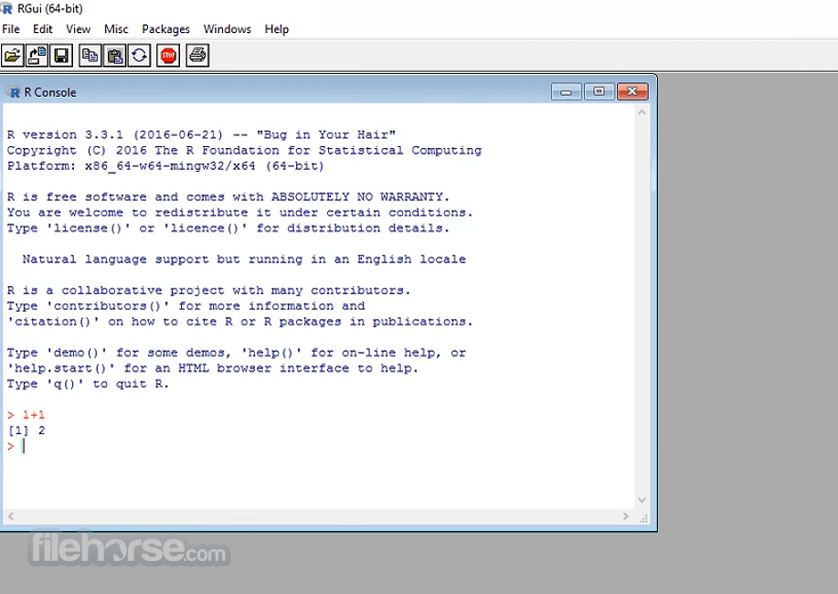
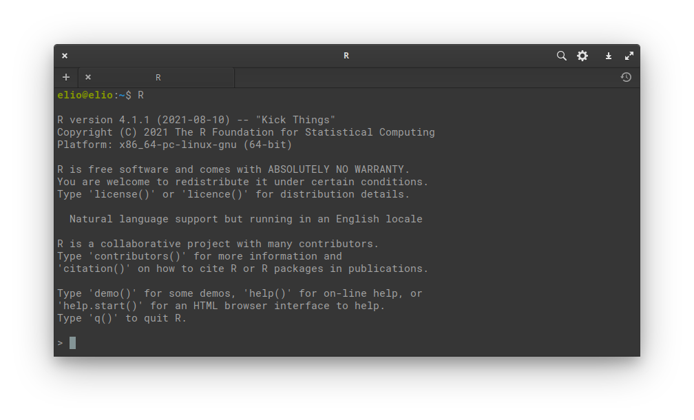
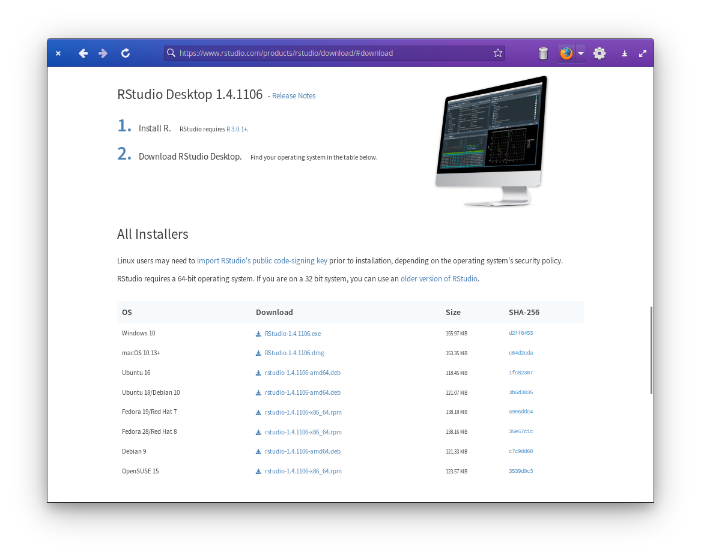
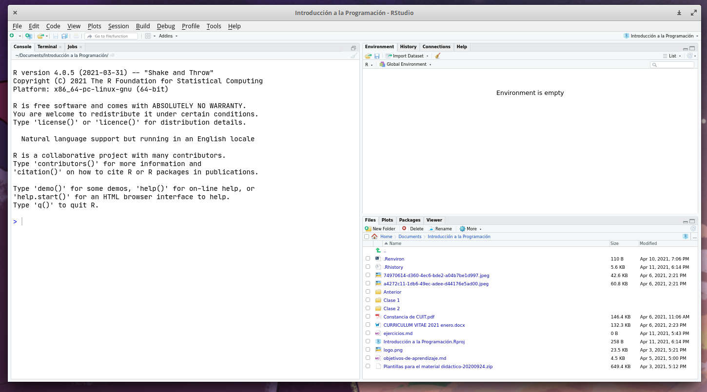

Apéndice B Instalando R y RStudio
En esta sección presentamos instrucciones de instalación de R y RStudio para Windows y derivados de Ubuntu. Notá que dado que tanto R como RStudio publican nuevas versiones periódicamente, es posible que estas instrucciones queden desactualizadas con el tiempo.
Instalando R
Windows
Entrá a https://cran.r-project.org/bin/windows/base/ y bajate el instalador haciendo click en el link grandote que dice “Download R x.x.x for Windows”.
Una vez que se bajó, hacé doble click en el archivo y seguí las instrucciones del instalador.
Una vez que se termine de instalar, te va a aparecer un ícono como este en el escritorio o en los programas instalados:  .
.
Al ejecutarlo, les tiene que aparecer algo como esto:

Si ves una ventana así significa que ya tenés instalado R, pero seguí leyendo! Todavía falta unos pasos para poder sacarle todo el jugo.
Para instalar algunos paquetes de R vas a necesitar instalar un programa adicional llamado rtools.
Entrá a https://cran.r-project.org/bin/windows/Rtools/ y descargate el instalador en donde dice “On Windows 64-bit: rtoolsxx-x86_64.exe (recommended: includes both i386 and x64 compilers)”
Abrí la consola de R, poné esto y apretá enter:
- Finalmente, para chequear que todo esté bien, cerrá R, volvé a abrirlo, escribí esto en la cosola y apretá enter:
Debería salir algo como esto:
## make
## "C:\\rtools40\\usr\\bin\\make.exe"Ubuntu o derivados
Para tener la última versión, tenés que agregar los repositorios de CRAN. Para hacerlo, vas a tener que tener permisos de administrador. Los detalles están en esta página, pero el resumen es:
sudo apt update -qq
sudo apt install --no-install-recommends software-properties-common dirmngr
sudo apt-key adv --keyserver keyserver.ubuntu.com --recv-keys E298A3A825C0D65DFD57CBB651716619E084DAB9
sudo add-apt-repository "deb https://cloud.r-project.org/bin/linux/ubuntu $(lsb_release -cs)-cran40/"
sudo sudo apt install r-base r-base-devSi todo salió bien, tenés que tener instalado R en tu máquina y podés ejecutarlo con el comando R en la consola.

B.1 Mac
Descarga e instala R para macOS: https://cran.r-project.org
Descarga e instala RStudio: https://www.rstudio.com
La primera vez que abrimos RStudio nos ofrece instalar las herramientas de XCode para línea de comandos. Aceptamos haciendo clic en instalar.
Instalando RStudio
Andá a https://www.rstudio.com/products/rstudio/download/#download. Abajo de todo está el listado de instaladores para cada plataforma; descargá la que corresponda a tu sistema operativo.

Windows
Como siempre, doble click en el archivo y seguir los pasos de instalación.
Ubuntu o derivados
Si tenés instalada una interfaz gráfica para instalar archivos .deb, ejecutando el archivo que descargaste ya vas a poder instalar RStudio. Si no, abrí una terminal en el directorio donde bajaste el archivo y ejecutá
Reemplazando ARCHIVO por el nombre del archivo instalador.
Es posible que salte algún error por falta de alguna dependencia, en ese caso usá
Y debería estar arreglado.
Una vez instalado, al ejecutar RStudio les tiene que aparecer una ventana como esta:
